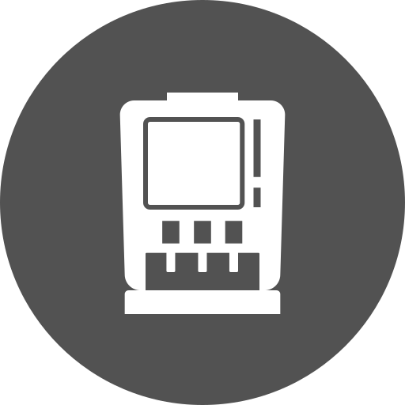
Mesin kopi full-otomatis
Siapkan kopi dalam hitungan menit, dengan hanya tap pada mesin yang mudah penggunaannya. Bentuknya ergonomis dan bisa diandalkan setiap hari.
Menjaga kualitas kopi tetap prima lewat proses cermat yang dilakukan dengan mesin kopi terbaik.

Siapkan kopi dalam hitungan menit, dengan hanya tap pada mesin yang mudah penggunaannya. Bentuknya ergonomis dan bisa diandalkan setiap hari.
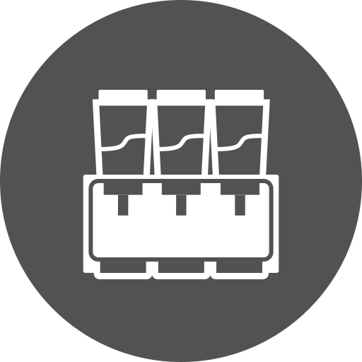
Sajikan kopi dengan mudah, memanfaatkan mesin semi-otomatis yang terpercaya. Mudah digunakan, siap dalam hitungan menit.
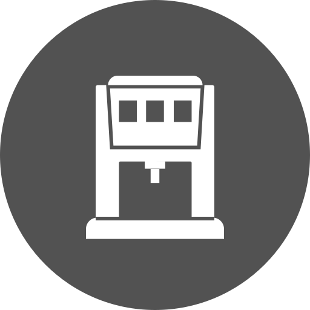
Dengan pengetahuan pakar kopi, kami mempersembahkan sistem penyeduhan kopi yang sesuai untuk berbagai keperluan dan metode penyajian. Semua demi kualitas dan rasa kopi terbaik.
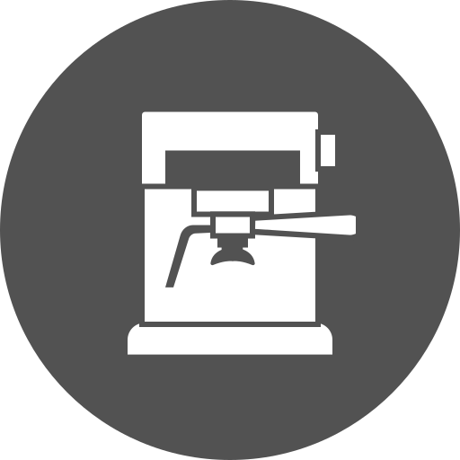
Menyajikan kopi dengan lebih mudah. Mesin kapsul kopi yang mudah digunakan, hemat energi demi pengalaman kopi terbaik.
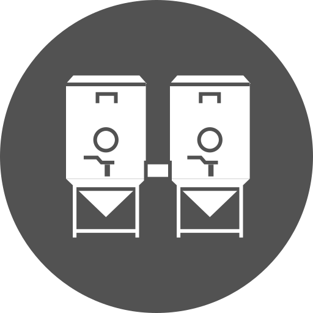
Untuk penggunaan pribadi dan profesional, dapatkan manfaat terbaik dari mesin giling kopi kami, cara lebih baik dalam menyajikan aslinya rasa kopi.
Set dispenser minuman dengan teknologi terbaru untuk berbagai acara.
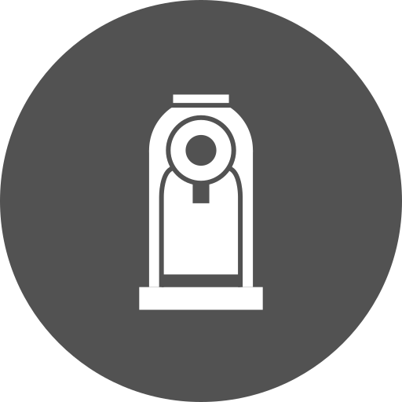
Jaga kualitas minuman tetap paling baik, dan sajikan lebih baik menggunakan mesin minuman instan kami.
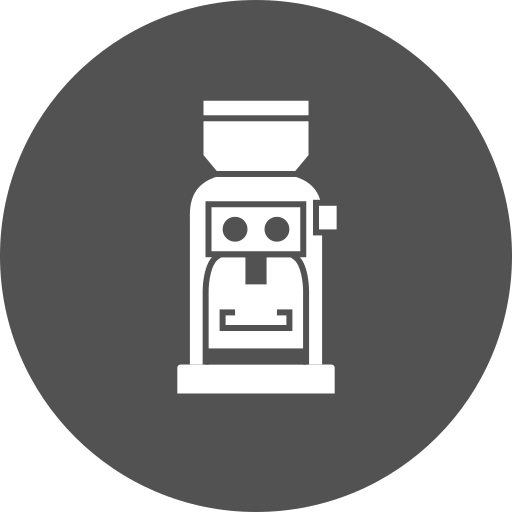
Untuk berbagai jenis minuman segar! Dispenser minuman dingin kami telah siap untuk berbagai kegunaan, semua untuk kelancaran aktivitas Anda.
Dari mesin pengaduk susu sampai gelas berlapis dua, nikmati alat-alat tradisi kami yang beragam dengan keakuratan tinggi.
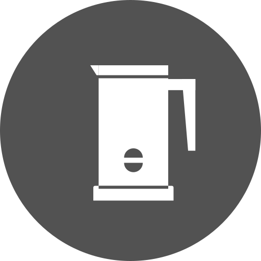
Menjaga kualitas produk susu Anda pada tingkat kesegaran paling tinggi. Koleksi alat pengaduk susu kami memudahkan Anda menikmati susu segar setiap hari.
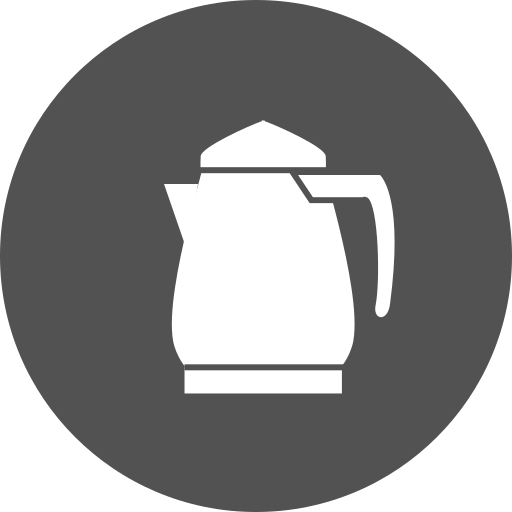
Menjaga kopi dan teh pada suhu optimum memerlukan dedikasi khusus. Ketel elektrik membuat suhu terjaga dalam waktu yang lebih lama, memastikan hasil seduhan tetap prima.
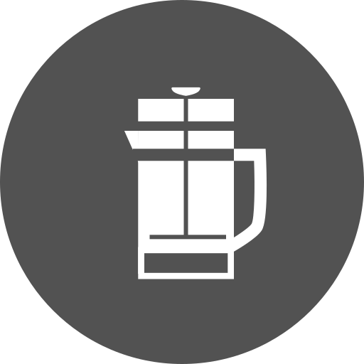
Sentuhan artistik dari alat French Press kini lebih dekat dengan keseharian Anda.
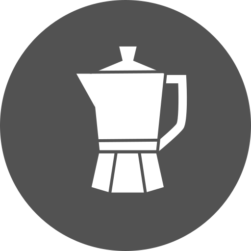
Menggunakan sistem aliran moka pot yang legendaris, metode seduh favorit kami menghasilkan produk dan pengalaman kopi yang nyata.
Sentuhan artistik dalam penyajian kopi, semua dalam bentuk gelas unik ini.